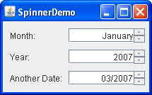

Lección: Usando Componentes Swing
Sección: Cómo Usar Varios Componentes
Cómo Usar Contadores Numéricos
Los Contadores Numéricos son similares a los cuadros combinados y las listas en que permiten al usuario seleccionar entre un rango de valores. Como los cuadros combinados editables, los contadores numéricos permiten al usuario escribir un valor. A diferencia de los cuadros combinados, los contadores numéricos no tienen una lista desplegable que puedan cubrir otros componentes. Ya que los contadores numéricos no visualizan posibles valores ─ sólo el valor actual es visible ─ son a menos usados en vez de los cuadros combinados o la listas cuando el conjunto de valores posibles es extremadamente grande. Sin embargo, los contadores numéricos deberían ser usados sólo cuando los valores posibles y su secuencia es obvia.
Un contador numérico es un componente compuesto por tres subcomponentes: dos pequeños botones y un
editor. El editor puede ser cualquier JComponent, pero por defecto es implementado como
un panel que contiene un campo de texto formateado. Los valores actuales
y posibles del contador numérico son gestionados por su modelo.
Aquí tiene una foto de una aplicación nombrada SpinnerDemo que tiene tres contadores numéricos
usados para especificar fechas:

El código para clase principal puede ser encontrado en
SpinnerDemo.java
. El contador numérico 'Mes' muestra el nombre del primer mes en la configuración regional del usuario. Los
posibles valores para este contador numérico están especificados usando una matriz de cadenas. El contador
numérico 'Año' muestra un valor de un rango de enteros, inicializado al año actual.El contador numérico 'Otra
Fecha' muestra un valor en un rango de objetos Date (inicialmente la fecha actual) en un formato
personalizado que muestra sólo un mes y año.
Pruebe esto:
-
Pulsa un botón Lanzar para ejecutar SpinnerDemo usando
Java™ Web Start (
descargue KDJ 7 o posterior). Alternativamente, para compilar y ejecutar el ejemplo usted mismo
, consulte el índice de ejemplo.

-
Con el contador numérico 'Mes', use los botones de flecha o las teclas para avanzar y retroceder a
través de los valores posibles.
Note que el valor más bajo es el primer mes del año (por ejemplo, enero) y el mayor es el último (por ejemplo, diciembre). Los valores exactos dependen de su configuración regional. También tenga en cuenta que los valores no cambian de ciclo ─ no puede usar el botón de flecha hacia arriba o la tecla para ir de diciembre directamente a enero ─ porque los modelos de contador numérico estándar no son compatibles con el ciclo. -
Escriba un nombre de mes válido para su configuración regional ─ por ejemplo, julio.
Note que el contador numérico automáticamente completa el nombre del mes. -
Muévase al contador numérico 'Año', intente escribir un año de hace más de 100 años ─ por
ejemplo, 1800─ y entonces pulse en otro contador numérico o presione la tecla Tab para
mover el foco fuera del contador numérico.
Porque este programa restringe el modelo del contador numérico a números dentro de los 100 años del año actual, 1800 no es válido. Cuando el foco se sale del contador numérico, el texto visualizado vuelve al último valor válido. -
Muévase al contador numérico 'Otra Fecha', use los botones flecha o las teclas para cambiar la fecha.
Note que por defecto la primera parte de la fecha ─ en este caso, el número del mes ─ cambia. Puede cambiar qué parte de la fecha cambia o pulsando el ratón o usando las teclas de fecha para movers a otra parte de la fecha.
Para crear un contador numérico, primero crea su modelo y entonces pasa el modelo al constructor JSpinner. Por ejemplo:
String[] monthStrings = getMonthStrings(); //obtiene los nombres del mes
SpinnerListModel monthModel = new SpinnerListModel(monthStrings);
JSpinner spinner = new JSpinner(monthModel);
El resto de esta sección cubre los siguientes temas:
- Usar Modelos de Contador Numérico y Editores Estándar
- Especificar el Formato del Contador Numérico
- Crear Modelos de Contador Numérico y Editores Personalizados
- Detectar Cambios en el Valor del Contador Numérico
- La IPA del Contador Numérico
- Ejemplos Que Usan Contadores Numéricos
Usar Modelos de Contador Numérico y Editores Estándar
La IPA de Swing suministra tres modelos de contadores numéricos:
- SpinnerListModel
-
El
SpinnerListModeles un modelo cuyos valores están definidos por una matriz de objetos o un objetoList. El contador numérico 'Mes' en el ejemploSpinnerDemousa este modelo, inicializado con una matriz derivada del valor devuelto por el métodogetMonthsde la clasejava.text.DateFormatSymbols. VeaSpinnerDemo.javapara más detalles. - SpinnerNumberModel
-
El
SpinnerNumberModelsoporta secuencias de númneros los cuales son expresados como objetosdouble, objetosint, u objetosNumber. Puede especificar los valores mínimos y máximos permitidos, como también el salto de paso ─ la cantidad de cada incremento o decremento. El contador numérico 'Año' usa este modelo, creado con el siguiente código:SpinnerModel model = new SpinnerNumberModel(currentYear, //valor inicial currentYear - 100, //mínimo currentYear + 100, //máximo 1); //paso - SpinnerDateModel
-
El
SpinnerDateModelsoporta secuencias de objetosDate. Puede especificar fechas mínimas y máximas, como también el campo (tal comoCalendar.YEAR) para incrementar o decrementar. Note, sin embargo, que algunos tipos de apariencia ignoran el campo especificado, y en vez de eso cambian el campo que aparece seleccionado. El contador numérico 'Otra Fecha' usa este modelo, creado con el siguiente código:Date initDate = calendar.getTime(); calendar.add(Calendar.YEAR, -100); Date earliestDate = calendar.getTime(); calendar.add(Calendar.YEAR, 200); Date latestDate = calendar.getTime(); model = new SpinnerDateModel(initDate, earliestDate, latestDate, Calendar.YEAR);
Cuando establece el modelo del contador numérico, el editor del contador numérico es automáticamente
establecido. La IPA de Swing suministra una clase editor correspondiente a cada una de las tres clases modelo
listadas arriba. Estas clases ─
JSpinner.ListEditor,
JSpinner.NumberEditor, y
JSpinner.DateEditor ─ son subclases de la clase
JSpinner.DefaultEditor que incluyen campos de texto formateado y editables. Si usa un modelo que no
tiene un editor asociado a él, el editor es por defecto una instancia de
JSpinner.DefaultEditor con un campo de texto formateado no editable.
Especificar el Formato del Contador Numérico
Para cambiar el formato usado en un editor estándar de contador numérico, puede crear y establecer el editor usted mismo.
Las clases JSpinner.NumberEditor y JSpinner.DateEditor tienen constructores que le
permiten crear un editor que formatea sus datos de una forma particular. Por ejemplo, el siguiente código
configura el contador numérico 'Otra Fecha" para que en vez de usar el formato de fecha por defecto, el cual es
largo e incluye el tiempo, muestre simplemnte un mes y un año de una forma compacta.
spinner.setEditor(new JSpinner.DateEditor(spinner, "MM/yyyy"));
Nota:
Puede jugar con los formatos de fecha ejecutando el ejemplo ComboBoxDemo2. Pulse el botón
Lanzar para ejecutar ComboBoxDemo2 usando
Java™ Web Start
(
descargue KDJ 7 o posterior
). Alternativamente, para compilarlo y ejecutarlo usted mismo,
consulte el índice de ejemplos.
Para más información sobre las cadenaws de formato, vea la lección Formateodel recorrido de Internacionalización.
Para cambiar el formato cuando us un editor por defecto, puede obtener el campo de texto formateado del
editor e invocar métodos sobre él. Puede llamar a esos métodos usando el método getTextField
definido en la clase JSpinner.DefaultEditor. Note que los editores proporcionados por Swing no
son campos de texto formateados. En su lugar, son instancias de JPanel que contienen un campo de
texto formateado. Aquí tiene un ejemplo de obtención e invocación de métodos en el campo de texto formateado del
editor:
//Ajusta el campo de texto formateado del contador numérico.
ftf = getTextField(spinner);
if (ftf != null ) {
ftf.setColumns(8); //especificamos más ancho del que necesitamos
ftf.setHorizontalAlignment(JTextField.RIGHT);
}
...
public JFormattedTextField getTextField(JSpinner spinner) {
JComponent editor = spinner.getEditor();
if (editor instanceof JSpinner.DefaultEditor) {
return ((JSpinner.DefaultEditor)editor).getTextField();
} else {
System.err.println("Tipo de editor no esperado: "
+ spinner.getEditor().getClass()
+ " no es un descendiente de DefaultEditor");
return null;
}
}
Crear Modelos de Contador Numérico y Editores Personalizados
Si los modelos existentes de contador numérico o los editores no se ajustan a sus necesidades, puede crearse los suyos.
La forma más fácil de crear un modelo de contador numérico personalizado es crear una subclase de un subclase
existente de AbstractSpinnerModel que ya haga la mayor parte de lo que necesita. Una alternativa
es implementar su propia clase extendiendo la clase
AbstractSpinnerModel, la cual implemente las notificaciones de evento requeridas para todos
los modelos del contador numérico.
La siguiente subclase de SpinnerListModel implementa un modelo de contador numérico que
recorre una matriz de objetos. También le permite especificar un segundo modelo de contador numérico que
será actualizado cada vez que el ciclo comienze de nuevo. Por ejemplo, si la matriz de objetos es una lista de
meses, el modelo enlazado podría ser para un contador numérico que muestre el año. Cuando el mes pasa de
diciembre a enero se incrementa el año.
public class CyclingSpinnerListModel extends SpinnerListModel {
Object firstValue, lastValue;
SpinnerModel linkedModel = null;
public CyclingSpinnerListModel(Object[] values) {
super(values);
firstValue = values[0];
lastValue = values[values.length - 1];
}
public void setLinkedModel(SpinnerModel linkedModel) {
this.linkedModel = linkedModel;
}
public Object getNextValue() {
Object value = super.getNextValue();
if (value == null) {
value = firstValue;
if (linkedModel != null) {
linkedModel.setValue(linkedModel.getNextValue());
}
}
return value;
}
public Object getPreviousValue() {
Object value = super.getPreviousValue();
if (value == null) {
value = lastValue;
if (linkedModel != null) {
linkedModel.setValue(linkedModel.getPreviousValue());
}
}
return value;
}
}
El modelo CyclingSpinnerListModel es usado para el contador numérico Mes en el ejemplo
SpinnerDemo2, un ejemplo que es casi idéntico a SpinnerDemo. Pulse el botón Lanzar
para ejecutar SpinnerDemo2 usando
Java™ Web Start (
descargue KDJ 7 o posterior).
Alternativamente, para compilar y ejecutar el ejemplo por usted mismo, consulte el
índice de ejemplos.
Como mencionamos antes, si implementa un modelo de contador numérico que no desciende de
SpinnerListModel, SpinnerNumberModel, o SpinnerDateModel, entonces el
editor por defecto del contador numérico es una instancia no editable de JSpinner.DefaultEditor.
Como ya ha visto, puede establecer un editor de contador numérico invocando el método setEditor
en el contador numérico después del que la propiedad del modelo de contador numérico haya sido
establecida. Una alternativa a usar setEditor es crear una subclase de la clase
JSpinner y sobreescribir su método createEditor de forma que devuelva una clase
particular de editor siempre que el modelo del contador numérico sea de un cierto tipo.
En teoría al menos, puede usar cualquier instancia de JComponent como un editor. Las posibilidades
incluyen usar una subclase de un componente estándar tal como una JLabel, o un componente que usted
haya implementado desde cero, o una subclase de JSpinner.DefaultEditor. Los requerimientos únicos
son que el editor debe ser actualizdo para reflejar los cambios en el valor del contador numérico, y debe ser
de un tamaño preferido razonable. El editor generalmente también establecerá su texto de sugerencia de
herramienta a cualquier texto de sugerencia de herramienta que haya sido especificada para el contador numérico.
Un ejemplo de implementar un editor se proporciona en la siguiente sección.
Detectar Cambios en el Valor del Contador Numérico
Puede detectar que el valor de un contador numérico ha cambiado registrando un oyente de cambios ya sea, sobre
el contador numérico o su modelo. Aquí tiene un ejemplo que implementa como tal un oyente de cambios. Este
ejemplo es de SpinnerDemo3, el cual está basdao en SpinnerDemo y usa un on oyente
de cambios para cambiar el color de algo de texto para que coincida con el valor del contador numérico "Otra
Fecha". Pulsa el botón "Lanzar" para ejecutar SpinnerDemo3 usando
Java™ Web Start (
descargue KDJ 7 o powterior).
Alternativamente, para compilar y ejecutar el ejeplo, por usted mismo, consulte el
índice de ejemplos.
public class SpinnerDemo3 extends JPanel
implements ChangeListener {
protected Calendar calendar;
protected JSpinner dateSpinner;
...
public SpinnerDemo3() {
...
SpinnerDateModel dateModel = ...;
...
setSeasonalColor(dateModel.getDate()); //inicializa el color
//Escucha por los cambios de la fecha en el contador numérico.
dateSpinner.addChangeListener(this);
...
}
public void stateChanged(ChangeEvent e) {
SpinnerModel dateModel = dateSpinner.getModel();
if (dateModel instanceof SpinnerDateModel) {
setSeasonalColor(((SpinnerDateModel)dateModel).getDate());
}
}
protected void setSeasonalColor(Date date) {
calendar.setTime(date);
int month = calendar.get(Calendar.MONTH);
JFormattedTextField ftf = getTextField(dateSpinner);
if (ftf == null) return;
//Establece el color para que coincida con las convenciones estacionales del hemisferio norte.
switch (month) {
case 2: //Marzo
case 3: //Abril
case 4: //Mayo
ftf.setForeground(SPRING_COLOR);
break;
...
default: //Diciembre, Enero, Febrero
ftf.setForeground(WINTER_COLOR);
}
}
...
}
El siguiente ejemplo implementa un editor que tiene un oyente de cambios de forma que pueda reflejar el valor actual del contador numérico. Este editor particular visualiza un color sólido de gris, que va desde el blanco al negro. Pulse el botón Lanzar para ejecutar SpinnerDemo4 usando Java™ Web Start ( descargue KDJ 7 o posterior). Alternativamente, para compilar y ejecutar el ejemplo por usted mismo, consulte el índice de ejemplos.
...//Donde los componentes son creados:
JSpinner spinner = new JSpinner(new GrayModel(170));
spinner.setEditor(new GrayEditor(spinner));
class GrayModel extends SpinnerNumberModel {
...
}
class GrayEditor extends JLabel
implements ChangeListener {
public GrayEditor(JSpinner spinner) {
setOpaque(true);
...
//Obtiene información del modelo.
GrayModel myModel = (GrayModel)(spinner.getModel());
setBackground(myModel.getColor());
spinner.addChangeListener(this);
...
updateToolTipText(spinner);
}
protected void updateToolTipText(JSpinner spinner) {
String toolTipText = spinner.getToolTipText();
if (toolTipText != null) {
//JSpinner tiene texto de sugerencia de herramientas. Uselo
if (!toolTipText.equals(getToolTipText())) {
setToolTipText(toolTipText);
}
} else {
//Definimos nuestro propio text de sugerencia de herramienta.
GrayModel myModel = (GrayModel)(spinner.getModel());
int rgb = myModel.getIntValue();
setToolTipText("(" + rgb + "," + rgb + "," + rgb + ")");
}
}
public void stateChanged(ChangeEvent e) {
JSpinner mySpinner = (JSpinner)(e.getSource());
GrayModel myModel = (GrayModel)(mySpinner.getModel());
setBackground(myModel.getColor());
updateToolTipText(mySpinner);
}
}
La IPA del Contador Numérico
Las siguientes tablas listan algunas de las IPA comunmente usadas para usar contadores numéricos. Si necesita tratar directametne con el campo de texto formateado del editor, también debería ver La IPA de FormattedTextField. Otros métodos que podría usar están listados en las tablas del IPA en La Clase JComponent.
- Clases Relacionadas con Contadores Numéricos
- Constructores y Métodos Útiles de JSpinner
- Constructores y Métodos Útiles del Editor
- Métodos de SpinnerListModel
- Métodos de SpinnerDateModel
- Métodos de SpinnerDateModel
| Clase o Interfaz | Propósito |
|---|---|
| JSpinner | Un campo de entrada de una línea que permite al usuario seleccionar un número o valor de objeto a partir de una secuencia ordenada. |
| SpinnerModel | El interfaz implementado por todos los modelos de contador numérico. |
| AbstractSpinnerModel | La superclase usual para las implementaciones del modelo de contador numérico. |
| SpinnerListModel |
Una subclase de AbstractSpinnerModel cuyos valores están definidos por una matriz o una
List.
|
| SpinnerDateModel |
Una subclase de AbstractSpinnerModel que soporta secuencias de instancias de
Date.
|
| SpinnerNumberModel |
Una subclase de AbstractSpinnerModel que soporta secuencias de números.
|
| JSpinner.DefaultEditor | Implementa un componente no editable que visualiza el valor del contador numérico. Las subclases de esta clase son generalmente más especializadas (y editables). |
| JSpinner.ListEditor |
Una subclase de JSpinner.DefaultEditor cuyos valores están definidos por una matria o una
List.
|
| JSpinner.DateEditor |
Una subclase de JSpinner.DefaultEditor que soporta secuencias de intancias de
Date.
|
| JSpinner.NumberEditor |
Una subclase de JSpinner.DefaultEditor que soporta secuencias de números.
|
| Constructor o Método | Propósito |
|---|---|
|
JSpinner()
JSpinner(SpinnerModel) |
Crea un nuevo JSpinner. El constructor sin argumentos crea un contador numérico con un
entero SpinnerNumberModel con un valor inicial de 0 y sin límites mínimos ni máximos. El
parámetros opcional del segundo constructor le permite especificar su propio SpinnerModel.
|
|
void setValue(java.lang.Object)
Object getValue() |
Establece u obtiene el elemento actualmente visualizado de la secuencia. |
|
Object getNextValue()
Object getPreviousValue() |
Obtiene el objeto en la secuencia que viene antes o después del objeto devuelto por el método
getValue.
|
|
SpinnerModel getModel()
void setModel(SpinnerModel) |
Obtiene o establece el modelo del contador numérico. |
|
JComponent getEditor()
void setEditor(JComponent) |
Obtiene o establece el editor del contador numérico, el cual es a menudo un objeto de tipo
JSpinner.DefaultEditor.
|
| protected JComponent createEditor(SpinnerModel) |
Llamado por los constructores de JSpinner para crear el editor del contador numérico.
Sobreescriba este método para asociar un editor con un tipo particular de modelo.
|
| Constructor o Método | Propósito |
|---|---|
| JSpinner.NumberEditor(JSpinner, String) |
Creates a JSpinner.NumberEditor instance that displays and allows editing of the number
value of the specified contador numérico. The string argument specifies the format to use to display the number.
See the IPA documentation for
DecimalFormat for
information about decimal format strings.
|
| JSpinner.DateEditor(JSpinner, String) |
Creates a JSpinner.DateEditor instance that displays and allows editing of the
Date value of the specified contador numérico. The string argument specifies the format to use to
display the date. See the IPA documentation for
SimpleDateFormat for information about date format strings.
|
|
JFormattedTextField getTextField()
(definida en JSpinner.DefaultEditor)
|
Obtiene el campo de texto formateado que suministra el IGU principal para este editor. |
| Método | Propósito |
|---|---|
|
void setList(List)
List getList() |
Establece u obtiene la List que define la secuencia para este modelo.
|
| Método | Propósito |
|---|---|
|
void setValue(Object)
Date getDate() Object getValue() |
Establece u obtiene la Date actual para esta secuencia.
|
|
void setStart(Comparable)
Comparable getStart() |
Establece u obtiene la primera Date en esta secuencia. Use null para
especificar que el contador numérico no tiene límite inferior.
|
|
void setEnd(Comparable)
Comparable getEnd() |
Establece u obtiene la última Date en esta secuencia. Use null para
especificar que el contador numérico no tiene límite superior.
|
|
void setCalendarField(int)
int getCalendarField() |
Establece u obtiene el tamaño del incremento de valor de fecha usado por los métodos
getNextValue y getPreviousValue. Esta propiedad no es usada cuando el
usuario explícitamente incrementa o decrementa el valor; en su lugar, la parte seleccionada del campo
de texto formateado es incrementada o decrementeada. El parámetro especificado debe ser una de las
siguientes constantes, definidas en Calendar: ERA, YEAR,
MONTH, WEEK_OF_YEAR, WEEK_OF_MONTH, DAY_OF_MONTH,
DAY_OF_YEAR, DAY_OF_WEEK, DAY_OF_WEEK_IN_MONTH,
AM_PM, HOUR_OF_DAY, MINUTE, SECOND,
MILLISECOND.
|
| Método | Propósito |
|---|---|
|
void setValue(Object)
Number getNumber() |
Establece u obtiene el valor actual para esta secuencia. |
|
void setMaximum(Comparable)
Comparable getMaximum() |
Establece u obtiene el límite superior para los números en esta secuencia. Si el máxim es
null, no hay límite superior.
|
|
void setMinimum(Comparable)
Comparable getMinimum() |
Establece u obtiene el límite infoerio para los números en esta secuencia. Si el mínimo es
null, no hay límite inferior.
|
|
void setStepSize(Number)
Number getStepSize() |
Establece u obtiene el incremento usado por los métodos getNextValue y
getPreviousValue.
|
Ejemplos Que Usan Contadores Numéricos
Esta tabla lista los ejemplos que usan contadores numéricos y puntos donde esos ejemplos se describen.
| Ejemplo | Dónde se Describe | Notas |
|---|---|---|
SpinnerDemo |
Esta sección | Usa las tres clases estándar de modelo de contador numérico. Contiene el código para usar un modelo de contador numérico personalizado, pero el código está desactivado por defecto |
SpinnerDemo2
|
Esta sección |
Una subclase de SpinnerDemo que usa el modelo personalizado del contador numérico
para el contador numérico de Meses.
|
SpinnerDemo3
|
Esta sección | Basada en SpinnerDemo, esta aplicación muestra cómo monitorizar los cambios en el valor de un contador numérico. |
SpinnerDemo4
|
Esta sección | Implementa un modelo personalizado y un editor personalizado para un contador numérico que muestra tonos de gris. |